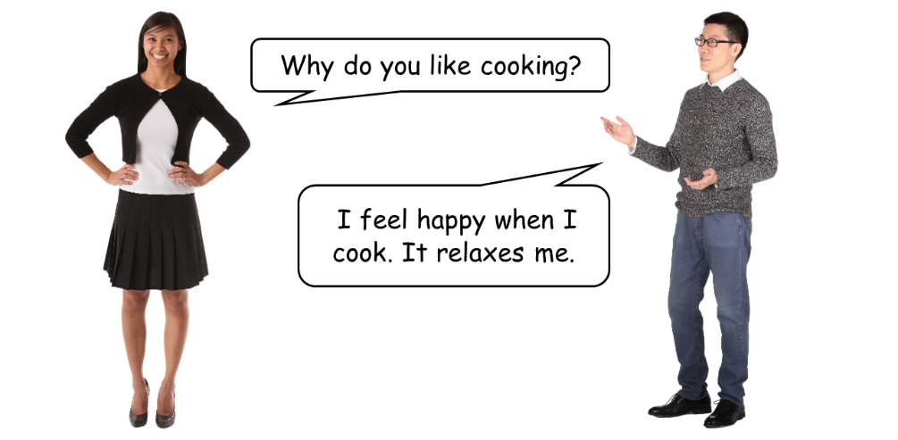
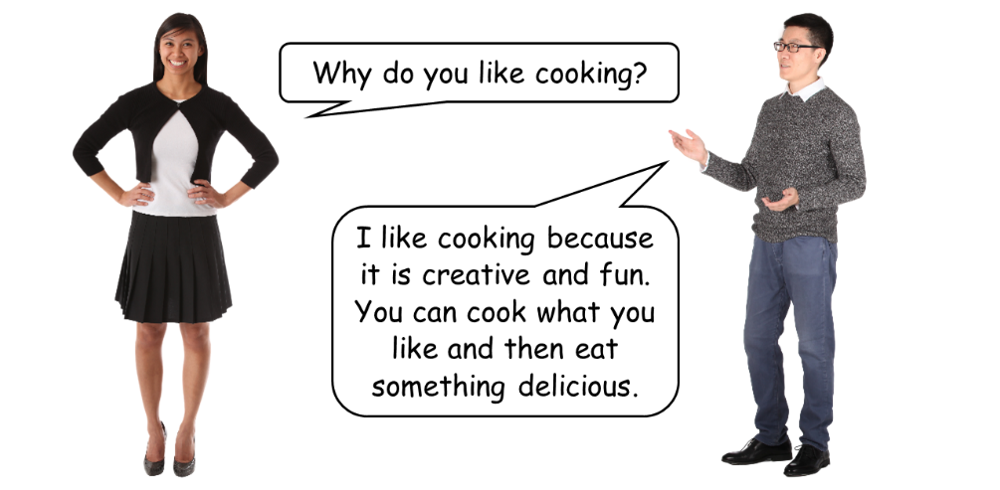

Activity 31: Cooking for leisure
Audio: Cooking
Listen to the audio Cooking audio
Read the question and choose the correct answer.
What is the leisure activity?
Where do you do this activity?
What 3 things do you need for this activity?
Why do people cook for leisure?


Answers
Listen to the audio Cooking. Read the question and choose the correct answer.
What is the leisure activity?
| Choices | Answer |
|---|---|
| bike riding | |
| cooking | ✓ |
| surfing | |
| soccer |
Where do you do this activity
| Choices | Answer |
|---|---|
| indoors | ✓ |
| outdoors | |
| indoors and outdoors |
What 3 things do you need for this activity?
| Choices | Answers |
|---|---|
| utensils | ✓ |
| ball | |
| ingredients | ✓ |
| shin guards | |
| helmet | |
| recipe | ✓ |
Show transcript – Cooking
Conversation – cooking
Person 1: What leisure activity do you like?
Person 2: I like cooking.
Person 1: What do you cook?
Person 2: I cook different foods from my country.
Person 1: Where do you cook?
Person 2: I cook inside in a kitchen.
Person 1: Who do you do cook for?
Person 2: I cook for my family and friends.
Person 1: Why do you like it?
Person 2: It’s relaxing. I feel happy.